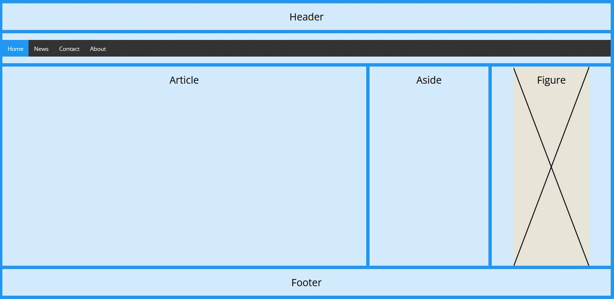
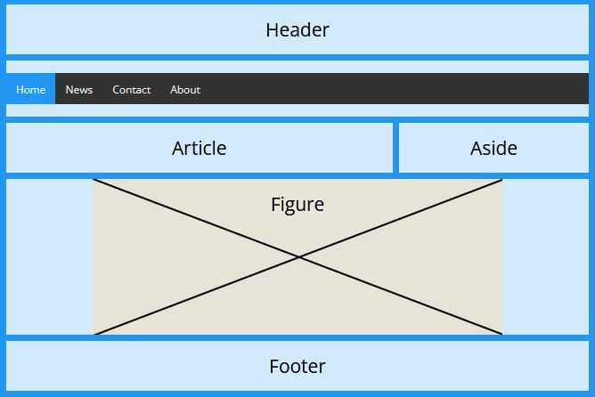
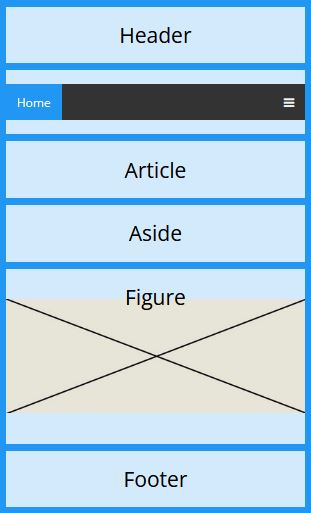

Toteuta seuraavan kuvasarjan mukainen käyttöliittymä hyödyntäen gridiä tai flexboxia.



Article on 3:n, aside 1:n ja figure 1:n sarakkeen (fraction) levyinen,
voit antaa niille myös tarkemman (toki suhteellisen) mitan.
Voit myös tehdä muutoksia suunnitelmaan. Piirrä siinä tapauksessa ensin suunnitelma kuvankäsittelyohjelmalla.
Voit kokeilla etsiä tietoa seuraavista CSS avainsanoista ja hyödyntää niitä työssä:
Figure tagin sisään voi laittaa 2 img tagia (vaaka ja pystymalliselle kuvalle/mainokselle).
Tällöin CSS:llä voi vuoroin piilottaa toisen ja näyttää toisen ruudun leveydestä riippuen.
Hyödynnä gridin teossa esim. W3Schoolsin tutoriaalia:
https://www.w3schools.com/css/tryit.asp?filename=trycss_grid_layout_namedResponsiivisen menun toteutukseen on myös oma tutoriaali:
https://www.w3schools.com/howto/howto_js_topnav_responsive.asp